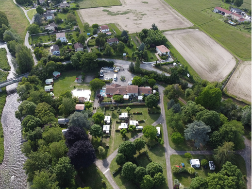

Toute l’équipe du Camping Portes d’Ariège est heureuse de vous accueillir et vous souhaite un excellent séjour.
Situé à pamiers, au coeur de l’Ariège, notre camping est le point de départ idéal pour découvrir les richesses du territoire : villages de caractère, sites préhistoriques, montagnes, lacs et nombreuses activités de pleine nature.
Ce livret a été conçu pour vous accompagner tout au long de votre séjour. Vous y trouverez toutes les informations pratiques concernant le camping ainsi que de nombreuses idées de visites et de loisirs.
Nous vous souhaitons de très belles vacances !
Le Camping Portes d’Ariège vous accueille dans un environnement calme et verdoyant, à seulement quelques minutes du centre-ville de Pamiers.
Que vous voyagiez en famille, entre amis, en couple ou en itinérance, notre camping vous propose des hébergements confortables ainsi que des emplacements spacieux.
Sa situation géographique permet de rejoindre facilement les principaux sites touristiques de l’Ariège tout en profitant d’un cadre naturel agréable.